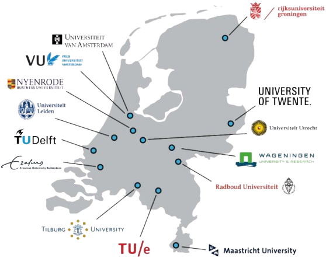

a softer way to practice
A safe place for students to rehearse the conversations that matter.
SpeakEasy gives higher-education institutions a low-stakes, AI-powered practice space where students can build the everyday communication confidence their studies and careers depend on. Three small steps from any laptop on campus — write the email, make the call, walk into the room — with a coach that runs in the browser and keeps every word private to the student.
Communication anxiety is quietly shaping student outcomes.
Social anxiety in university students is consistently linked to less contact with instructors, lower engagement and a worse overall student experience (Archbell & Coplan, 2021). Students who avoid emails, phone calls and in-person conversations also avoid help-seeking — and the academic and career costs add up.
A recent study of medical students found 42% reported at least mild telephobia (Bairwa et al., 2024). Younger generations who grew up on text increasingly experience live calls as intrusive and prefer media that let them participate at their own pace. The barrier is sharper still for non-native speakers and students facing cultural barriers (Kim & Oh, 2023).
The literature is clear on what helps: structured, low-stakes rehearsal with normalisation, gradual exposure and feedback. A telephone-simulation intervention with pharmacy students produced significant gains in confidence and self-rated communication skills (Rude et al., 2022). SpeakEasy turns those findings into something a student can open in a browser between lectures.
- 42%of medical students report at least mild telephobia (Bairwa et al., 2024)
- ↓social anxiety predicts reduced contact with instructors & lower engagement (Archbell & Coplan, 2021)
- ↑structured low-stakes practice significantly improves student confidence (Rude et al., 2022)

A graduated practice path institutions can deploy today
Three short modules, designed around the evidence base for graded exposure. Students start where it feels safest and step up as their confidence grows.
Write the email
Draft the message a student has been putting off — to a professor, a study advisor, an internship contact. A gentle coach scores tone and structure on every keystroke, modelling the kind of feedback most institutions can't give one-to-one at scale.
Start writingMake the call
A live voice call with an AI persona — a GP receptionist, a course coordinator, a municipality desk. Hold the spacebar to talk. Pick the difficulty. Hang up whenever it gets too much. The literature calls this structured, low-stakes telephone rehearsal; we call it the bit students were missing.
Start the callStep into the room
A small social scene rendered in 3D — a networking break, a tutor group, an information event. Walk up. Listen. Join in when you're ready. A coach in the corner suggests something to say if a student's mind goes blank, exactly the scaffolding the research recommends for socially anxious learners.
Open the sceneWhy institutions should care
Reaches students before they disengage
Students who avoid calls and emails also avoid help-seeking. SpeakEasy gives them a private place to practise contacting their own university — before a missed deadline becomes a dropout risk.
Evidence-based by design
Built on the consensus from the literature: normalisation, structured scripts, low-stakes rehearsal and graduated exposure (Archbell & Coplan, 2021; Rude et al., 2022). Not a generic chatbot — a focused, pedagogical tool.
Inclusive of language & cultural barriers
Telephone anxiety is stronger for non-native speakers and international students (Kim & Oh, 2023). SpeakEasy lets them rehearse Dutch academic and administrative scenarios as many times as they need, with no audience.
Private, safe, embeddable
Runs in the browser. Nothing students say leaves the page unless they choose to share it. Easy to embed alongside existing student wellbeing, study advice and career services.